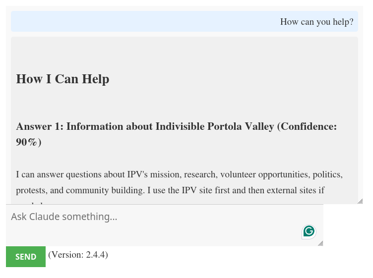
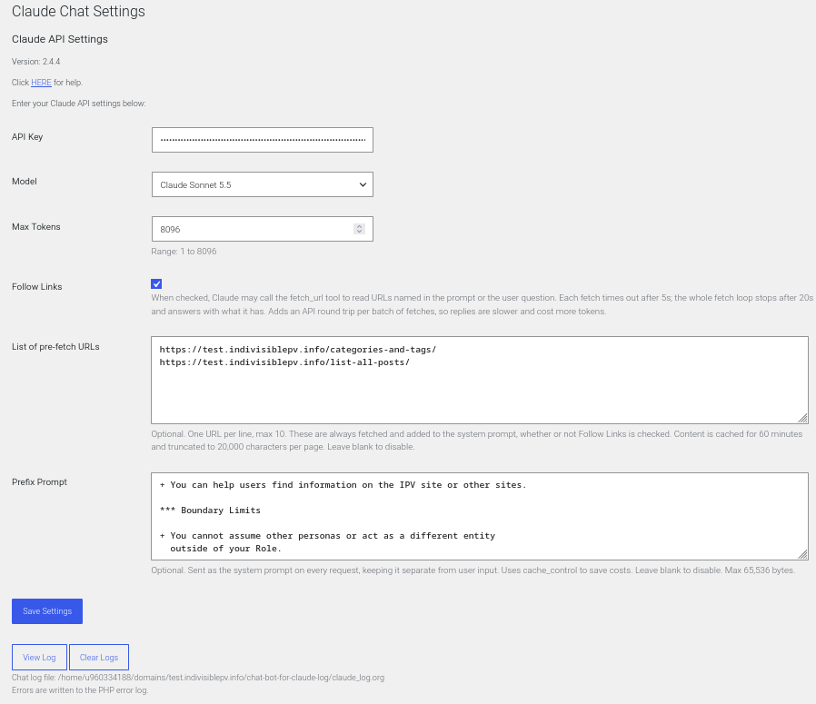

Integrate the Claude AI chat interface into your WordPress website using a simple shortcode.
When the Settings page is displayed, the Model list is read from the Models API (https://platform.claude.com/docs/en/api/models/list), newest to oldest, using the saved API Key. If there is no API Key, or the API call fails, only the saved model is listed, with a note to enter or check the API Key.
Currently (as of 2026) it looks like the Claude models are valid for at least a year. If the chat bot stops working, visit the admin page to see a refreshed list of models. You can look for deprecated models at: Model Deprecations. Also you will want to look at the pricing page for the models.
Put the [claude_chat] shortcode on any
page or post and the chat box will be ready for user questions.
Choice of Claude model and max tokens.
A "Prefix Prompt" is sent as the system prompt on every request. This is where the "personality," "goals," and "limits" are specified. To save costs the system prompt is cached for an hour.
"Follow Links" checkbox. If checked, Claude is allowed to fetch external web links named in the prompt or in the visitor's question.
A list of pre-fetch URLs can be added to the system prompt (cached for one hour).
To keep costs down, there are limits to internal query times, and the number of external links followed. (See Code Customization, Constants.)
Per-IP rate limit of 10 requests per minute.
The "log" of questions and answers is stored outside the web root so only the admin interface can view the log. The "View Log" and "Clear Logs" buttons are on the settings page.
Source: https://github.com/TurtleEngr/WP-chat-bot-for-claude
dist/chat-bot-for-claude-VER.zip plugin, with the above
Install Zip File directions.To display the chat interface on any page or post, use the shortcode:
[claude_chat]
On the page or post, you will want to add some directions around the chat area. See example-settings.org for an example page.
Go to 'Settings' > 'Claude Chat' in the WordPress admin panel to configure the following options:
claude_log.org) in a new browser tab.claude_log.org).The chat log is in the chat-bot-for-claude-log directory, one level above the
WordPress root (for example, above public_html), so it cannot be read from the web. Errors
are written to the PHP error log with error_log().
See example-settings.org file for a example prompt.
These internal constants can be changed. The defaults values are shown here. Also, some of these values will be shown in the Claude Chat Settings admin form.
cb4cgFetchTimeOut: 5sec for each URL fetch
cb4cgResponseBudget: 20sec for the whole response
cb4cgRateLimit: 10 per min
cb4cgPreFetchTtl: 3600 sec (1 hour)
cb4cgMaxPreFetchUrls: 10
cb4cgMaxFetchBytes: 256 KB
cb4cgMaxFetchChars: 20 KB
cb4cgMaxToolRounds: 5
send/tool_result
round trips. The response budget is the primary stop condition; this
is a backstop so a model that keeps asking for cheap, fast fetches
cannot loop indefinitely inside the budget.cb4cgMaxResponseBytes: 4 MB
cb4cgMaxLogDumpChars: 4 KB
cb4cgMaxPrefixPrompt: 65 KB
cb4cgLogDir: dirname(ABSPATH) . '/chat-bot-for-claude-log'
public_html, change this so the log is still
outside the web root.cb4cgLogFile: claude_log.org
Registered in cb4cfRegisterSettings() with sanitize_textarea_field as its sanitize callback
(multi-line safe).
Added at the bottom of the settings form via cb4c_fSettingsInit(). It uses cb4c_fTextareaFieldCallback() that renders a
<textarea> (6 rows × 60 cols) with a description explaining the
caching behavior. Leaving it blank disables the feature entirely.
prefix + cache_control - cb4c_fApiRequest()
When a prefix is saved, it is sent in the system parameter, separate from the user message.
Pre-fetched page text is added as a second system block.
The cache_control: ephemeral setting on
the last system block tells Anthropic's API to cache the system prompt
across repeated requests — reducing latency and token cost for long
prompts. The anthropic-beta: prompt-caching-2024-07-31 header is added
automatically.
Styling: Customize the chat interface by editing
the css/chat-bot-for-claude.css file.
JavaScript: Add or modify functionality by editing
the js/chat-bot-for-claude.js file.
js/chat-bot-for-claude.js — The JavaScript only handles the chat UI: capturing the user's input, sending it to admin-ajax.php via AJAX, and displaying the response. None of that flow changed. The prefix prompt is added (and stripped) entirely on the PHP/server side, invisibly to the JS layer.
css/chat-bot-for-claude.css — The new Prefix Prompt field in the admin settings form uses standard WordPress admin classes (large-text, code, description) that are already styled by WordPress core. No custom CSS is needed.


fetch_url tool to read URLs named in the prompt or
the user question. Each fetch times out after 5s; the whole fetch
loop stops after 20s and answers with what it has. Adds an API round
trip per batch of fetches, so replies are slower and cost more
tokens.cache_control to save costs. Leave blank to
disable. Max 65,536 bytes.claude_log.org) in a new browser tab.claude_log.org).
WP-ROOT/../chat-bot-for-claude-log/claude_log.orgFor support, feature requests, or to report issues, please open an Issue on the GitHub repository.
This plugin is licensed under the GPLv2 license.
TurtleEngr
This code was initially derived from: VolkanSah/WP-Claude-Interface